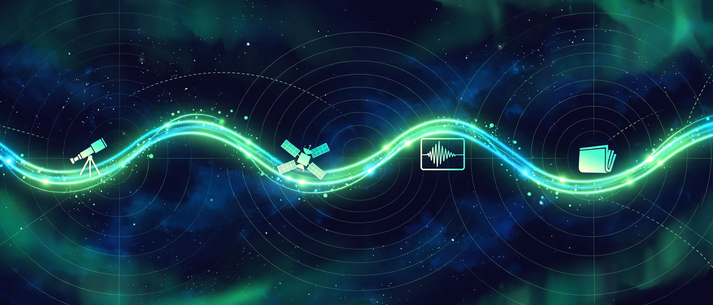

October 23, 2026
How a story gets onto this page — our verification pipeline

Illustration by The Discovery Wire (generated artwork for this story)
Every story on this page passes through a machine before it reaches you — and we think you should see how it works.
Step 1: The scan
It starts with a scan across our content pillars: science and space news from the last 24 to 48 hours, the weekly earthquake watch built from the public USGS-tracked feeds, open mysteries we've been following (Kryptos, the Voynich manuscript, the Wow! signal), and dispatches from our own lab's experiments.
Stories rotate across the pillars so no single lane dominates the feed.
Step 2: Verification — the kill step
If a story can't be verified against at least one reputable outlet — NASA, USGS, NOAA, Reuters, or the actual journal paper — it doesn't get written. No exceptions. We check facts, quotes, dates, and image provenance before a single line of copy is drafted.
Step 3: The site article comes first
The story gets written twice: once as a full article on this website, and once as the Facebook post. The website version always comes first — it's the long form, with the links, the context, and the image credits. The page post is the short form: a hook in the first line, the honest core, and a discussion question.
The source link always lands in the first comment on the post, never buried in the text — so you can check our work in one tap.
Step 4: Image rules — a hard line
Real photos and visuals come from the official source — NASA, USGS, the outlet that broke the story — and every one is credited by name in the post text. When no real visual exists, we generate a branded illustration and we label it as such. We will never pass a generated image off as a real photo of a real event.
Step 5: The hard gates
Some rules are absolute and override everything else:
- No earthquake predictions. Roundups of public USGS data only. Nobody can forecast earthquakes, and we never imply otherwise.
- No solution claims on mysteries. We cover open questions as open questions — curiosity and history, never "we solved it."
- No unpublished lab findings. Nothing from our own research goes public until monetization and IP protection have been handled first. Research, then post — never the reverse.
Step 6: Publish — organic only
Posts go out as the page, public, with paid promotion permanently off. No boosted posts, no ads. Organic only, always.
The scoreboard so far
As of this writing: 40 posts published and 50 full articles on this site — built one story at a time, on a $0 budget, with the same pipeline every single time.
Source: The Discovery Wire
← Back to latest stories